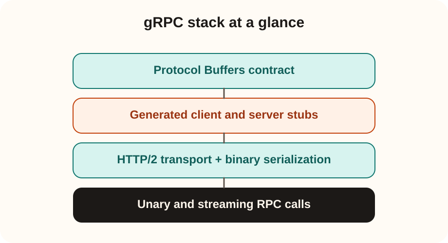

Systems track
gRPC explained clearly
gRPC is a high-performance remote procedure call framework where services are defined through a typed contract, usually Protocol Buffers, and clients call remote methods almost like local functions.
It is common in microservices and internal backends where strong typing, performance, code generation, and streaming matter more than human-readable JSON payloads.
Core flow
.proto contract -> generated stubs -> RPC over HTTP/2
What “remote procedure call” means
You define service methods such as GetUser, CreateOrder, or StreamLogs and invoke them as remote operations instead of manually constructing ad hoc request payloads for each endpoint.
What Protocol Buffers adds
Protocol Buffers provides a compact binary serialization format and a schema language for defining messages and service methods in a contract-first style.
Why gRPC evolved
- Distributed systems needed faster and more strongly typed service communication.
- Hand-written REST clients create contract drift and duplicated parsing logic.
- Streaming workflows are awkward in many plain request-response API designs.
What it solves
- Shared service contracts across languages.
- Efficient binary payloads.
- Generated client and server code.
- First-class unary and streaming RPC patterns.

1. Define a service
You write a .proto file with messages and service methods.
2. Generate code
Tooling produces client stubs and server interfaces in supported languages.
3. Implement the server
Your application fills in business logic behind the generated service interface.
4. Call remote methods
The client uses generated types and methods rather than hand-crafting HTTP requests for each call.
Important comparison
gRPC vs typical HTTP/REST APIs
| Aspect | Typical HTTP/REST | gRPC |
|---|---|---|
| Contract style | Often endpoint-first and loosely typed. | Usually contract-first with .proto schemas. |
| Payload | Often JSON and human-readable. | Usually compact binary Protocol Buffers. |
| Client code | Often hand-written SDK logic. | Generated stubs are a central feature. |
| Streaming | Possible but less native. | First-class support. |
| Best fit | Public APIs and browser-friendly integrations. | Internal microservices and high-throughput service meshes. |
Important nuance: gRPC still uses HTTP/2 underneath. The real difference is contract style, binary serialization, generated stubs, and RPC semantics.
Unary RPC
One request and one response. Closest to a standard API call.
Server streaming
One request and many streamed responses. Useful for logs or incremental results.
Client streaming
Many client messages followed by one final response. Useful for upload and aggregation flows.
Bidirectional streaming
Both sides send messages over the same stream. Useful for real-time coordination.
Example 1: user profile service
A gateway calls a user-profile microservice from Go, Java, and Python. gRPC is attractive because one proto definition can generate compatible clients and server interfaces across languages.
Example 2: live metrics stream
A monitoring service pushes metric updates continuously to consumers. gRPC streaming is cleaner than forcing the workflow into repeated polling requests.
Interview readiness
Questionnaire and scenarios
When would you prefer gRPC over REST?
When I need strongly typed internal service contracts, efficient binary payloads, multi-language code generation, and especially streaming or high-throughput service-to-service communication.
Why is gRPC not always the default for public APIs?
Public consumers often prefer human-readable JSON, simpler debugging, and broad browser/tooling support. gRPC is strongest when internal efficiency and type safety matter more than public API ergonomics.
You are designing an internal microservice mesh in Java, Go, and Python. Why might gRPC fit well?
The contract-first proto definition can generate consistent clients and servers across languages, reducing contract drift and making service interaction more reliable.
An interviewer says, “gRPC is just HTTP.” How do you respond?
gRPC uses HTTP/2 as transport, but the application model is different: contract-first RPC semantics, generated stubs, binary Protocol Buffers serialization, and first-class streaming support.